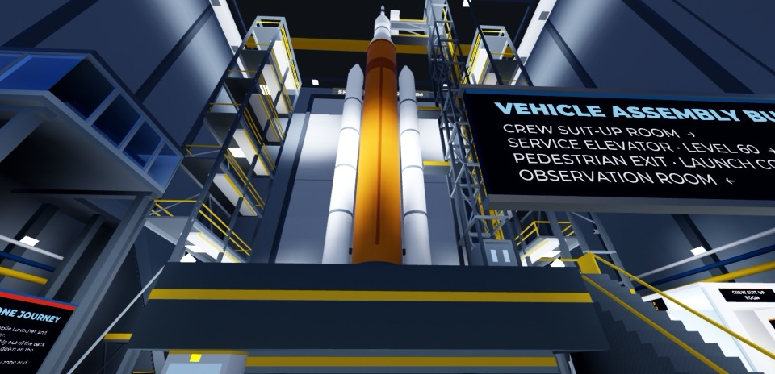
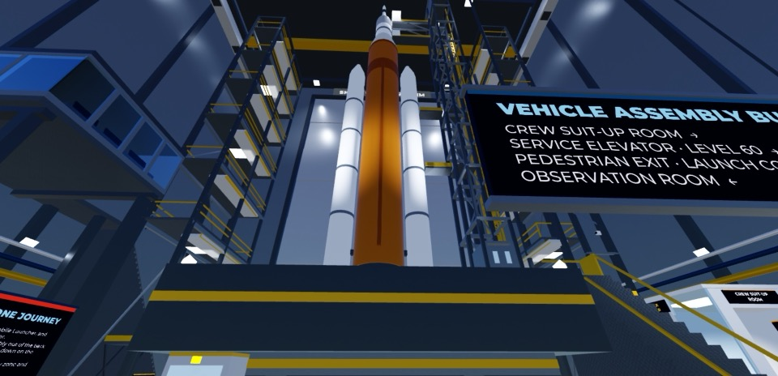
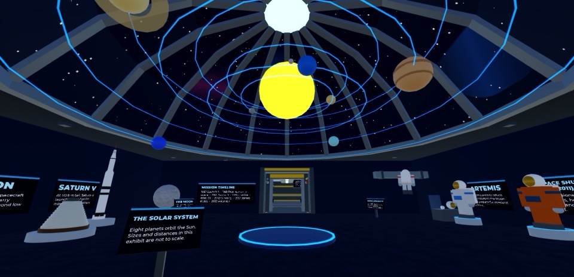
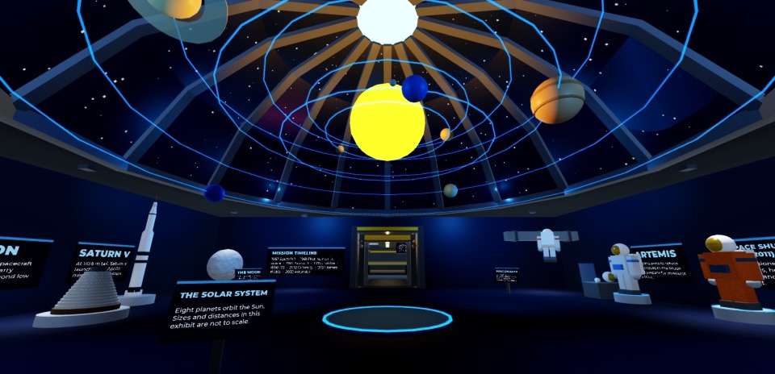
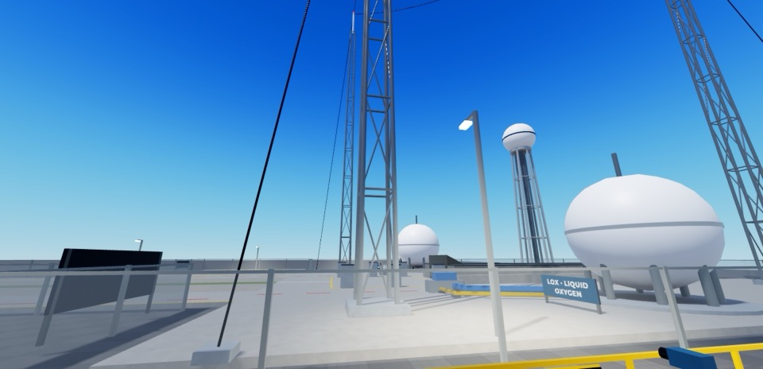
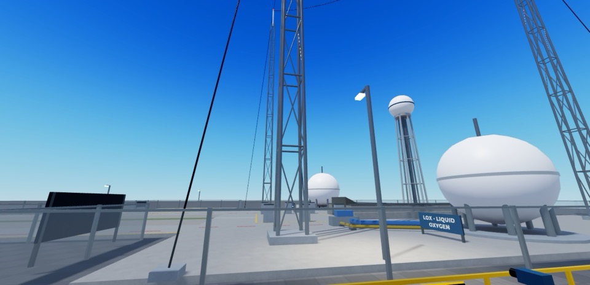

A = LightingStyle Soft, Bloom 0,6 / 24 / 1,6. B = LightingStyle Realistic, Bloom 0,25 / 10 / 2. Mesma câmera em cada linha.






| Imagem | Média | Mediana | p95 | > 0,85 (estourado) | < 0,10 (escuro) | Saturação |
|---|---|---|---|---|---|---|
| VAB — A | 0,285 | 0,206 | 0,877 | 5,5% | 20,9% | 0,51 |
| VAB — B | 0,250 | 0,232 | 0,684 | 1,3% | 17,9% | 0,54 |
| Museu — A | 0,131 | 0,029 | 0,515 | 2,2% | 67,0% | 0,80 |
| Museu — B | 0,122 | 0,034 | 0,507 | 2,3% | 68,9% | 0,80 |
| Externa — A | 0,606 | 0,612 | 0,845 | 4,7% | 0,6% | 0,50 |
| Externa — B | 0,581 | 0,575 | 0,824 | 2,4% | 0,6% | 0,52 |